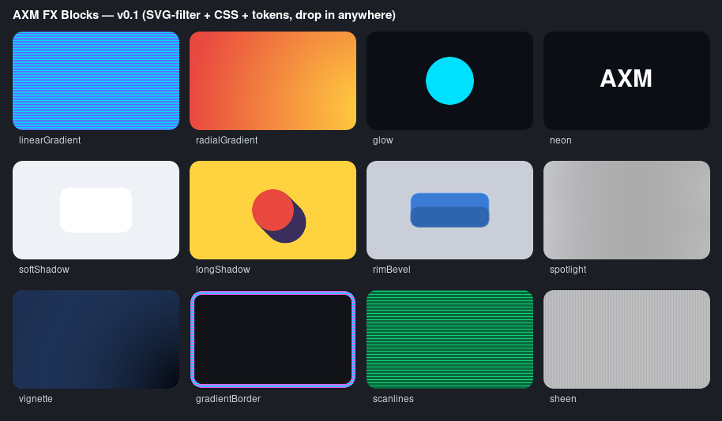

03
PORTABLE OUTPUTExact selected recipe
PORTABLE EFFECT LEGO
Fifteen locally generated effect blocks expose CSS, truthful SVG primitives and engine-neutral tokens without silently applying anything.
SELECTED BLOCK
light.glow
Use all fifteen blocks inside Shapeable Builder as governed visual definitions. Importing grants no permissions and applies no effect automatically.
Download Shapeable block pack Open Shapeable Builder
ORIGINAL LOCAL PROOF
The source export remains preserved. This page uses the promoted deterministic runtime and never contacts a network service.